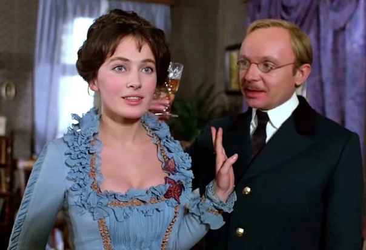
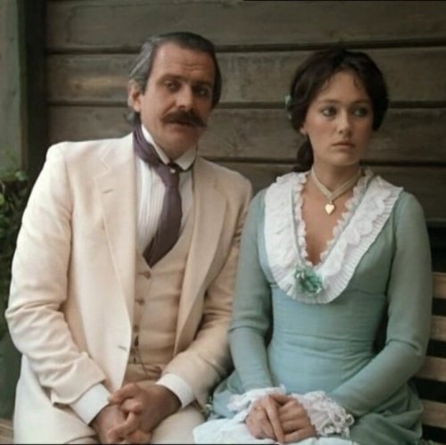
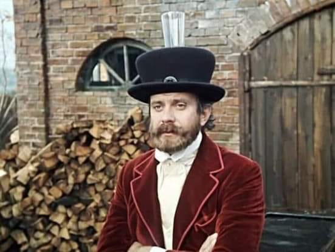
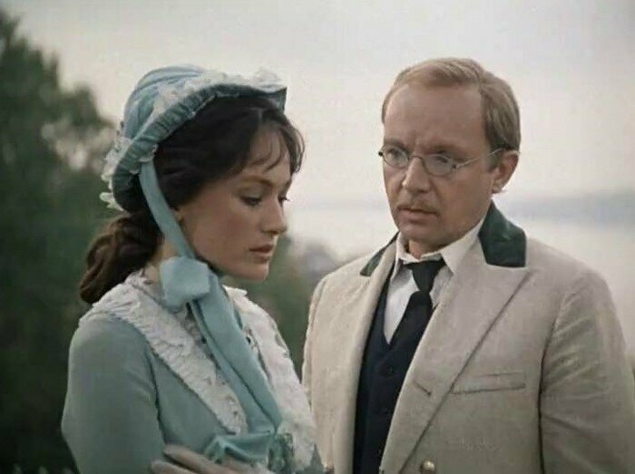
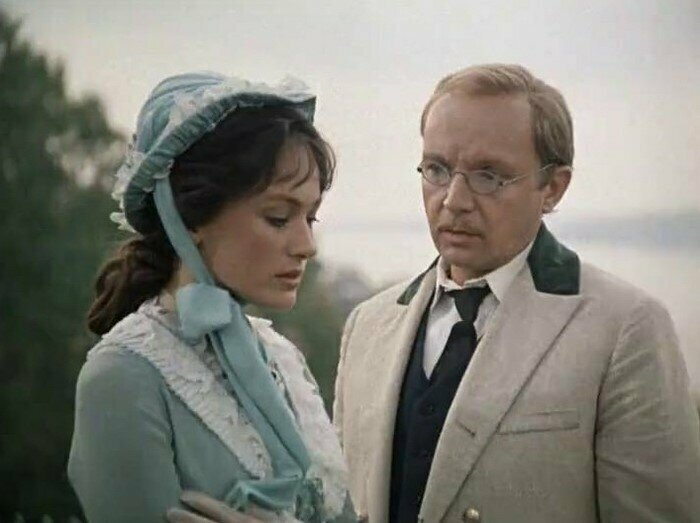

Разбор произведения "Бесприданница"
Пьеса «Бесприданница» рассказывает о судьбе Ларисы Огудаловой – бедной, но красивой девушки, которая живёт в мире, где брак – это сделка, а чувства не имеют значения. Она влюблена в богатого и обаятельного Паратова, но он бросает её ради выгодного брака. В отчаянии Лариса соглашается выйти за мелкого чиновника Карандышева, которого не любит. Когда Паратов возвращается, девушка снова поддаётся его обаянию, но он лишь играет её чувствами. Богатые купцы Кнуров и Вожеватов обсуждают Ларису как товар, а Кнуров предлагает ей стать его содержанкой. Осознав свою беспомощность, Лариса принимает свою судьбу. Оскорблённый Карандышев в порыве ревности стреляет в неё, а перед смертью она с облегчением произносит: «Как хорошо!».
Лариса Огудалова
Основные черты:Честность, доверчивость, мечтательность, гордость, чувствительность, наивность, жертвенность, внутреннее благородство, стремление к свободе, эмоциональность, искренность, уязвимость, романтичность, беззащитность, достоинство.
Лариса Огудалова – главная героиня «Бесприданницы», воплощающая трагедию женщины, зависимой от окружающего её общества. Она красива, умна и образованна, но отсутствие приданого делает её беспомощной перед жестокими законами света, где женщины – товар, а брак – сделка. Лариса искренне влюблена в обаятельного и богатого Паратова, но он предаёт её, женившись на богатой невесте. Потеряв надежду на любовь, она соглашается выйти за Карандышева – бедного чиновника, который хочет властвовать над ней, но вызывает у неё лишь презрение. Возвращение Паратова вновь пробуждает её чувства, но он лишь играет ей. В это же время купцы Кнуров и Вожеватов обсуждают её судьбу, словно торгуя товаром. Кнуров предлагает ей стать его содержанкой, но Лариса, осознавая свою беспомощность, выбирает «идти навстречу гибели». В кульминации пьесы униженный Карандышев стреляет в Ларису. Умирая, она произносит «Как хорошо!», выражая облегчение от освобождения из жестокого мира, где у неё не было выбора. Её трагедия символизирует судьбу многих женщин её времени, лишённых права на самостоятельность.
Василий Паратов
 Основные черты:Харизматичный, эгоистичный, циничный, расчётливый, обаятельный, манипулятивный, беспринципный, самоуверенный, жестокий, холодный, азартный, ловкий, безответственный, непостоянный, прагматичный, самодовольный, равнодушный к чужим чувствам.
Василий ПаратовВасилий Паратов – богатый и харизматичный дворянин, олицетворяющий цинизм и эгоизм. Он очаровывает Ларису красивыми словами и поступками, но на деле преследует лишь свои выгоды. Бросив её ради выгодного брака, он возвращается спустя время и снова пытается завоевать её внимание, но не из любви, а ради собственного удовольствия. Его поведение символизирует беспощадность людей высшего света, которые не задумываются о судьбах тех, кто им доверился. Паратов привык получать всё, чего хочет, используя своё обаяние и положение, но при этом он абсолютно безответственен в своих поступках. Он легко играет чувствами Ларисы, не задумываясь о последствиях, и, в отличие от Карандышева, даже не пытается оправдывать себя любовью – для него всё это лишь игра. В конечном итоге он остаётся безнаказанным, как и многие представители его круга, разрушая чужие судьбы, но не испытывая за это ни угрызений совести, ни раскаяния.
Юлий Карандышев
.jpeg) 

Основные черты:Тщеславный, обидчивый, неуверенный, завистливый, мелочный, злопамятный, уязвимый, самодовольный, ревнивый, властный, мнительный, слабохарактерный, несдержанный, гордый, неуклюжий, раздражительный, неумелый в общении, упрямый, мстительный.
Юлий Карандышев – бедный чиновник, который мечтает получить Ларису в жёны, но не способен дать ей ни счастья, ни любви. Он тщеславен, обидчив и неуверен в себе, но пытается доказать свою значимость, унижая окружающих. В его образе сочетаются мелочность, зависть и желание власти над женщиной, которую он считает своим трофеем. Осознавая, что Лариса не любит его, а лишь соглашается на брак из-за безысходности, он испытывает глубокое оскорбление и не может смириться с её равнодушием. Карандышев стремится выглядеть достойным женихом, демонстрирует гордость и самолюбие, но на деле оказывается слабым, жалким и неспособным противостоять более влиятельным людям. Он безуспешно пытается отстоять своё право на Ларису перед Паратовым, Кнуровым и Вожеватовым, но его никто не воспринимает всерьёз. В конечном итоге его ревность, затаённая злоба и чувство собственной ничтожности приводят его к убийству Ларисы. Этот поступок – не только акт отчаяния, но и проявление его желания утвердиться хотя бы в роли мстителя. Он не может принять тот факт, что Лариса свободна в своём выборе, и решает её судьбу сам, став последним звеном в цепи её трагедии.